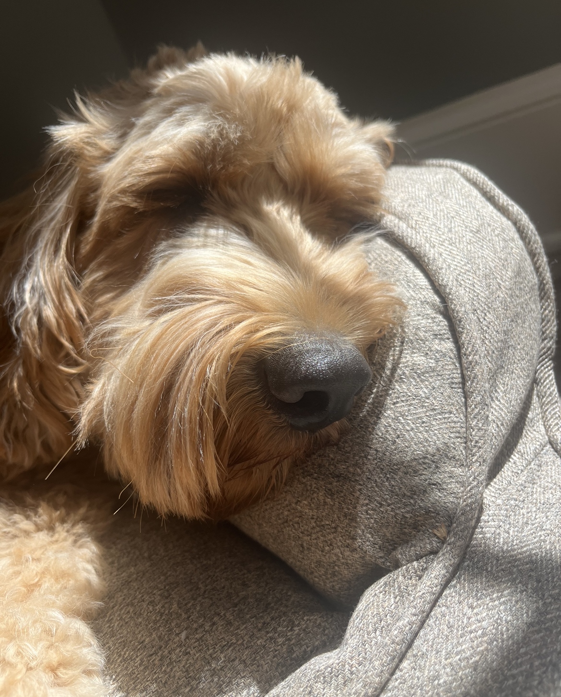

Zack

Zack is an African grey parrot, aged around three years old. Zack loves flying and being outside of the cage at all times. He’s very nice but bites so much.
Zack’s favorite foods are unsalted sunflower seeds and mangos. He loves being able to sit on people’s shoulders and talking to them. Zack knows over 500 words and learns more every day.
Photo Gallery


Likes
- Sunflower seeds
- Flying
- Going on Walks
Riley

Riley is a 2yr old goldendoodle. He is very active and loves attention. Riley can be pretty mischievous; as such, his favorite activity is begging for (or stealing) food, however getting cuddled on a cool floor comes as a close second. In addition, Riley loves to walk in his local park or hang out with his best friend Cosmo.
Riley would NOT survive in the wild. He is very stubborn, jealous, and pampered. He’s currently in his “terrible twos,” and must get everything his way. That said, Riley is loved by his family as a perfect, funny, and loyal dog.
Photo Gallery



Likes
- Sneaking onto the couch
- Being grumpy after naps
- Peering onto kitchen countertops